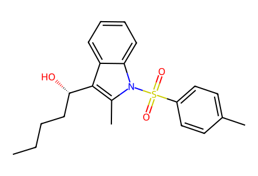
CCCC[C@H](O)c1c(C)n(S(=O)(=O)c2ccc(C)cc2)c2ccccc12Primary research experimental network, four generations and observed branches; historical literature schemes, proposed biogenesis and hypothetical mechanistic intermediates excluded from experimental route. Racemic structures encode a representative enantiomer. Expanded SI optimization tables not fully reviewed; independent chemical review pending. Facts compiled deterministically; independent review pending.
完整 JSON · 逐步 CSV · 路线序列 · SDF · HRMS 核对
| 事件 | 分子连接 | 报告产率 | Canonical reaction SMILES |
|---|---|---|---|
| M01 | 8 + DMAA → 9 | 9: 96% | CCCC[C@H](O)c1c(C)n(S(=O)(=O)c2ccc(C)cc2)c2ccccc12.COC(C)(OC)N(C)C>>CCCC/C=C1\c2ccccc2N(S(=O)(=O)c2ccc(C)cc2)[C@]1(C)CC(=O)N(C)C |
| M02 | 13 + DMAA → 14 | 14: 93% | CCOC(=O)C(O)c1cn(S(=O)(=O)c2ccccc2)c2ccccc12.COC(C)(OC)N(C)C>>CCOC(=O)/C=C1\c2ccccc2N(S(=O)(=O)c2ccccc2)C1CC(=O)N(C)C |
| M03 | 15 + ethyl oxalyl chloride → 16 | 16: 70% | CCOC(=O)C(=O)Cl.c1ccc(-c2cc3ccccc3[nH]2)cc1>>CCOC(=O)C(=O)c1c(-c2ccccc2)[nH]c2ccccc12 |
| M04 | 16 → 17 | 17: 95% | CCOC(=O)C(=O)c1c(-c2ccccc2)[nH]c2ccccc12>>CCOC(=O)C(=O)c1c(-c2ccccc2)n(S(=O)(=O)c2ccc(C)cc2)c2ccccc12 |
| M05 | 17 → 18 | 18: 80% | CCOC(=O)C(=O)c1c(-c2ccccc2)n(S(=O)(=O)c2ccc(C)cc2)c2ccccc12>>CCOC(=O)[C@@H](O)c1c(-c2ccccc2)n(S(=O)(=O)c2ccc(C)cc2)c2ccccc12 |
| M06 | 18 + DMAA → 19 | 19: 70% | CCOC(=O)[C@@H](O)c1c(-c2ccccc2)n(S(=O)(=O)c2ccc(C)cc2)c2ccccc12.COC(C)(OC)N(C)C>>CCOC(=O)/C=C1\c2ccccc2N(S(=O)(=O)c2ccc(C)cc2)[C@]1(CC(=O)N(C)C)c1ccccc1 |
| T01 | 25 + PhNCO → 27 | 27: 80% | CC(=O)c1ccccc1N.O=C=Nc1ccccc1>>O=c1[nH]c2ccccc2c2cc3ccccc3n12 |
| T02 | 27 → 28 | 28: 96% | O=c1[nH]c2ccccc2c2cc3ccccc3n12>>c1ccc2c(c1)NCn1c-2cc2ccccc21 |
| T03 | 28 → 29 | 29: 97% | c1ccc2c(c1)NCn1c-2cc2ccccc21>>CC(C)(C)OC(=O)N1Cn2c(cc3ccccc32)-c2ccccc21 |
| T04 | 29 + ethyl glyoxylate → 30 | 30: 98% | CC(C)(C)OC(=O)N1Cn2c(cc3ccccc32)-c2ccccc21.CCOC(=O)C=O>>CCOC(=O)C(O)c1c2n(c3ccccc13)CN(C(=O)OC(C)(C)C)c1ccccc1-2 |
| T05 | 30 + DMAA → 31 | 82% combined mixture yield | CCOC(=O)C(O)c1c2n(c3ccccc13)CN(C(=O)OC(C)(C)C)c1ccccc1-2.COC(C)(OC)N(C)C>>CCOC(=O)/C=C1\c2ccccc2N2CN(C(=O)OC(C)(C)C)c3ccccc3C12CC(=O)N(C)C |
| T06 | 31 → 32 | 95% combined mixture yield | CCOC(=O)/C=C1\c2ccccc2N2CN(C(=O)OC(C)(C)C)c3ccccc3C12CC(=O)N(C)C>>CCOC(=O)C[C@H]1c2ccccc2N2CN(C(=O)OC(C)(C)C)c3ccccc3[C@@]12CC(=O)N(C)C |
| A01 | 25 + PhNHNH2 → 33 | 33: 94% | CC(=O)c1ccccc1N.NNc1ccccc1>>C/C(=N\Nc1ccccc1)c1ccccc1N |
| A02 | 33 → 34 | not reported | C/C(=N\Nc1ccccc1)c1ccccc1N>>Nc1ccccc1-c1cc2ccccc2[nH]1 |
| A03 | 34 + formic acid → 35 | 35: 93% | Nc1ccccc1-c1cc2ccccc2[nH]1.O=CO>>c1ccc2c(c1)cc1c3ccccc3ncn21 |
| A04 | 35 + ethyl glyoxylate → 36 | 36: 97% | CCOC(=O)C=O.c1ccc2c(c1)cc1c3ccccc3ncn21>>CCOC(=O)C(O)c1c2ccccc2n2cnc3ccccc3c12 |
| A05 | 36 + DMAA → 39 | 39: 74% | CCOC(=O)C(O)c1c2ccccc2n2cnc3ccccc3c12.COC(C)(OC)N(C)C>>CCOC(=O)C[C@@H]1c2ccccc2N2CNc3ccccc3[C@@]12CC(=O)N(C)C |
| A06 | 36 + DMAA → 37 + 44 | 37: 46%; 44: 45% | CCOC(=O)C(O)c1c2ccccc2n2cnc3ccccc3c12.COC(C)(OC)N(C)C>>CCOC(=O)/C=C1\c2ccccc2N2C=Nc3ccccc3C12CC(=O)N(C)C.CN(C)C(=O)[C@H]1C(=O)C=C2c3ccccc3N3C=Nc4ccccc4[C@]213 |
| A07 | 37 → 44 | not reported | CCOC(=O)/C=C1\c2ccccc2N2C=Nc3ccccc3C12CC(=O)N(C)C>>CN(C)C(=O)[C@H]1C(=O)C=C2c3ccccc3N3C=Nc4ccccc4[C@]213 |
| B01 | 39 → 45 | 45: 95% | CCOC(=O)C[C@@H]1c2ccccc2N2CNc3ccccc3[C@@]12CC(=O)N(C)C>>CCOC(=O)C[C@@H]1c2ccccc2N2CN(C(=O)OC(C)(C)C)c3ccccc3[C@@]12CC(=O)N(C)C |
| B02 | 45 → 47 + 48 + 49 | 47: 60%; 48: 15%; 49: 20% | CCOC(=O)C[C@@H]1c2ccccc2N2CN(C(=O)OC(C)(C)C)c3ccccc3[C@@]12CC(=O)N(C)C>>CCOC(=O)C[C@@H]1c2ccccc2N2CN(C(=O)OC(C)(C)C)c3ccccc3[C@@]12CC=O.CCOC(=O)C[C@@H]1c2ccccc2N2CN(C(=O)OC(C)(C)C)c3ccccc3[C@@]12CCN(C)C.CCOC(=O)C[C@@H]1c2ccccc2N2CN(C(=O)OC(C)(C)C)c3ccccc3[C@@]12CCO |
| B03 | 47 → 49 | 49: 95% | CCOC(=O)C[C@@H]1c2ccccc2N2CN(C(=O)OC(C)(C)C)c3ccccc3[C@@]12CC=O>>CCOC(=O)C[C@@H]1c2ccccc2N2CN(C(=O)OC(C)(C)C)c3ccccc3[C@@]12CCO |
| B04 | 49 → SI-1 | SI-1: 72% | CCOC(=O)C[C@@H]1c2ccccc2N2CN(C(=O)OC(C)(C)C)c3ccccc3[C@@]12CCO>>CCOC(=O)C[C@@H]1c2ccccc2N2CN(C(=O)OC(C)(C)C)c3ccccc3[C@@]12CCI |
| B05 | SI-1 → 50 | 50: 95% | CCOC(=O)C[C@@H]1c2ccccc2N2CN(C(=O)OC(C)(C)C)c3ccccc3[C@@]12CCI>>CCOC(=O)C[C@@H]1c2ccccc2N2CN(C(=O)OC(C)(C)C)c3ccccc3[C@@]12CCN=[N+]=[N-] |
| B06 | 49 → 50 | 50: 90% | CCOC(=O)C[C@@H]1c2ccccc2N2CN(C(=O)OC(C)(C)C)c3ccccc3[C@@]12CCO>>CCOC(=O)C[C@@H]1c2ccccc2N2CN(C(=O)OC(C)(C)C)c3ccccc3[C@@]12CCN=[N+]=[N-] |
| B07 | 50 → 51 | 51: 89% | CCOC(=O)C[C@@H]1c2ccccc2N2CN(C(=O)OC(C)(C)C)c3ccccc3[C@@]12CCN=[N+]=[N-]>>CC(C)(C)OC(=O)N1CN2c3ccccc3[C@H]3CC(=O)NCC[C@]32c2ccccc21 |
| C01 | 39 → 52 | 52: 90% | CCOC(=O)C[C@@H]1c2ccccc2N2CNc3ccccc3[C@@]12CC(=O)N(C)C>>CCOC(=O)C[C@@H]1c2ccccc2N2C=Nc3ccccc3[C@@]12CC(=O)N(C)C |
| C02 | 52 → 53 | 53: 95% | CCOC(=O)C[C@@H]1c2ccccc2N2C=Nc3ccccc3[C@@]12CC(=O)N(C)C>>CCOC(=O)C[C@@H]1c2cc(Br)ccc2N2C=Nc3ccc(Br)cc3[C@@]12CC(=O)N(C)C |
| C03 | 52 → 53 | 53: 85% | CCOC(=O)C[C@@H]1c2ccccc2N2C=Nc3ccccc3[C@@]12CC(=O)N(C)C>>CCOC(=O)C[C@@H]1c2cc(Br)ccc2N2C=Nc3ccc(Br)cc3[C@@]12CC(=O)N(C)C |
| C04 | 39 → 54 + 55 | 54: 80%; 55: 11% | CCOC(=O)C[C@@H]1c2ccccc2N2CNc3ccccc3[C@@]12CC(=O)N(C)C>>CCOC(=O)C[C@@H]1c2cc(Br)ccc2N2CNc3c(Br)cc(Br)cc3[C@@]12CC(=O)N(C)C.CCOC(=O)C[C@@H]1c2cc(Br)ccc2N2CNc3ccc(Br)cc3[C@@]12CC(=O)N(C)C |
| C05 | 54 → 55 + 56 | 55: 70%; 56: 11% | CCOC(=O)C[C@@H]1c2cc(Br)ccc2N2CNc3ccc(Br)cc3[C@@]12CC(=O)N(C)C>>CCOC(=O)C[C@@H]1c2cc(Br)cc(Br)c2N2CNc3c(Br)cc(Br)cc3[C@@]12CC(=O)N(C)C.CCOC(=O)C[C@@H]1c2cc(Br)ccc2N2CNc3c(Br)cc(Br)cc3[C@@]12CC(=O)N(C)C |
| C06 | 39 → 57 + 58 | 57: 64%; 58: 23% | CCOC(=O)C[C@@H]1c2ccccc2N2CNc3ccccc3[C@@]12CC(=O)N(C)C>>CCOC(=O)C[C@@H]1c2cc(Br)cc(Br)c2N2C=Nc3c(Br)cc(Br)cc3[C@@]12CC(=O)N(C)C.CCOC(=O)C[C@@H]1c2cc(Br)ccc2N2C=Nc3c(Br)cc(Br)cc3[C@@]12CC(=O)N(C)C |
| C07 | 39 → 63 | 63: 91% | CCOC(=O)C[C@@H]1c2ccccc2N2CNc3ccccc3[C@@]12CC(=O)N(C)C>>CCOC(=O)Cc1c2n(c3ccccc13)CNc1ccccc1-2 |
| D01 | 39 → 67 | 67: 99% | CCOC(=O)C[C@@H]1c2ccccc2N2CNc3ccccc3[C@@]12CC(=O)N(C)C>>CCOC(=O)C[C@@H]1c2ccccc2N2CN(C(C)=O)c3ccccc3[C@@]12CC(=O)N(C)C |
| D02 | 67 → 68 | 68: 99% | CCOC(=O)C[C@@H]1c2ccccc2N2CN(C(C)=O)c3ccccc3[C@@]12CC(=O)N(C)C>>CCOC(=O)C[C@@H]1c2cc(Br)cc(Br)c2N2CN(C(C)=O)c3ccccc3[C@@]12CC(=O)N(C)C |
| D03 | 54 → 73 | 73: 97% | CCOC(=O)C[C@@H]1c2cc(Br)ccc2N2CNc3ccc(Br)cc3[C@@]12CC(=O)N(C)C>>CCOC(=O)C[C@@H]1c2cc(Br)ccc2N2CN(C(C)=O)c3ccc(Br)cc3[C@@]12CC(=O)N(C)C |
| D04 | 73 → 64 | 64: 98% | CCOC(=O)C[C@@H]1c2cc(Br)ccc2N2CN(C(C)=O)c3ccc(Br)cc3[C@@]12CC(=O)N(C)C>>CCOC(=O)C[C@@H]1c2cc(Br)cc(Br)c2N2CN(C(C)=O)c3ccc(Br)cc3[C@@]12CC(=O)N(C)C |
| D05 | 64 → 74 | 74: 31% | CCOC(=O)C[C@@H]1c2cc(Br)cc(Br)c2N2CN(C(C)=O)c3ccc(Br)cc3[C@@]12CC(=O)N(C)C>>CCOC(=O)CC(c1cc(Br)cc(Br)c1N)c1ccnc2ccc(Br)cc12 |
| E01 | 45 → 75 | 75: 98% | CCOC(=O)C[C@@H]1c2ccccc2N2CN(C(=O)OC(C)(C)C)c3ccccc3[C@@]12CC(=O)N(C)C>>CCOC(=O)C[C@@H]1c2cc(Br)ccc2N2CN(C(=O)OC(C)(C)C)c3ccccc3[C@@]12CC(=O)N(C)C |
| E02 | 45 → 76 | 76: 90% | CCOC(=O)C[C@@H]1c2ccccc2N2CN(C(=O)OC(C)(C)C)c3ccccc3[C@@]12CC(=O)N(C)C>>CCOC(=O)C[C@@H]1c2cc(Br)cc(Br)c2N2CN(C(=O)OC(C)(C)C)c3ccccc3[C@@]12CC(=O)N(C)C |
| E03 | 45 → 77 | 77: 76% | CCOC(=O)C[C@@H]1c2ccccc2N2CN(C(=O)OC(C)(C)C)c3ccccc3[C@@]12CC(=O)N(C)C>>CCOC(=O)C[C@@H]1c2cc(Br)cc(Br)c2N2CN(C(=O)OC(C)(C)C)c3ccc(Br)cc3[C@@]12CC(=O)N(C)C |
| E-opt7 | 45 → 77 | 77: 41% | CCOC(=O)C[C@@H]1c2ccccc2N2CN(C(=O)OC(C)(C)C)c3ccccc3[C@@]12CC(=O)N(C)C>>CCOC(=O)C[C@@H]1c2cc(Br)cc(Br)c2N2CN(C(=O)OC(C)(C)C)c3ccc(Br)cc3[C@@]12CC(=O)N(C)C |
| E-opt8 | 45 → 77 | 77: 55% | CCOC(=O)C[C@@H]1c2ccccc2N2CN(C(=O)OC(C)(C)C)c3ccccc3[C@@]12CC(=O)N(C)C>>CCOC(=O)C[C@@H]1c2cc(Br)cc(Br)c2N2CN(C(=O)OC(C)(C)C)c3ccc(Br)cc3[C@@]12CC(=O)N(C)C |
| E-opt9 | 45 → 77 | 77: 59% | CCOC(=O)C[C@@H]1c2ccccc2N2CN(C(=O)OC(C)(C)C)c3ccccc3[C@@]12CC(=O)N(C)C>>CCOC(=O)C[C@@H]1c2cc(Br)cc(Br)c2N2CN(C(=O)OC(C)(C)C)c3ccc(Br)cc3[C@@]12CC(=O)N(C)C |
| E04 | 77 → 79 + 80 + 81 | 79: 17%; 80: 79%; 81: 3% | CCOC(=O)C[C@@H]1c2cc(Br)cc(Br)c2N2CN(C(=O)OC(C)(C)C)c3ccc(Br)cc3[C@@]12CC(=O)N(C)C>>CCOC(=O)C[C@@H]1c2cc(Br)cc(Br)c2N2CN(C(=O)OC(C)(C)C)c3ccc(Br)cc3[C@@]12CC=O.CCOC(=O)C[C@@H]1c2cc(Br)cc(Br)c2N2CN(C(=O)OC(C)(C)C)c3ccc(Br)cc3[C@@]12CCN(C)C.CCOC(=O)C[C@@H]1c2cc(Br)cc(Br)c2N2CN(C(=O)OC(C)(C)C)c3ccc(Br)cc3[C@@]12CCO |
| E05 | 77 → 79 | 79: 94% | CCOC(=O)C[C@@H]1c2cc(Br)cc(Br)c2N2CN(C(=O)OC(C)(C)C)c3ccc(Br)cc3[C@@]12CC(=O)N(C)C>>CCOC(=O)C[C@@H]1c2cc(Br)cc(Br)c2N2CN(C(=O)OC(C)(C)C)c3ccc(Br)cc3[C@@]12CC=O |
| E06 | 79 → 81 | 81: 94% | CCOC(=O)C[C@@H]1c2cc(Br)cc(Br)c2N2CN(C(=O)OC(C)(C)C)c3ccc(Br)cc3[C@@]12CC=O>>CCOC(=O)C[C@@H]1c2cc(Br)cc(Br)c2N2CN(C(=O)OC(C)(C)C)c3ccc(Br)cc3[C@@]12CCO |
| E07 | 81 → SI-2 | SI-2: 57% | CCOC(=O)C[C@@H]1c2cc(Br)cc(Br)c2N2CN(C(=O)OC(C)(C)C)c3ccc(Br)cc3[C@@]12CCO>>CCOC(=O)C[C@@H]1c2cc(Br)cc(Br)c2N2CN(C(=O)OC(C)(C)C)c3ccc(Br)cc3[C@@]12CCI |
| E08 | SI-2 → 82 | 82: 83% | CCOC(=O)C[C@@H]1c2cc(Br)cc(Br)c2N2CN(C(=O)OC(C)(C)C)c3ccc(Br)cc3[C@@]12CCI>>CCOC(=O)C[C@@H]1c2cc(Br)cc(Br)c2N2CN(C(=O)OC(C)(C)C)c3ccc(Br)cc3[C@@]12CCN=[N+]=[N-] |
| E09 | 81 → 82 | 82: 85% | CCOC(=O)C[C@@H]1c2cc(Br)cc(Br)c2N2CN(C(=O)OC(C)(C)C)c3ccc(Br)cc3[C@@]12CCO>>CCOC(=O)C[C@@H]1c2cc(Br)cc(Br)c2N2CN(C(=O)OC(C)(C)C)c3ccc(Br)cc3[C@@]12CCN=[N+]=[N-] |
| E10 | 82 → 84 | 84: 82% | CCOC(=O)C[C@@H]1c2cc(Br)cc(Br)c2N2CN(C(=O)OC(C)(C)C)c3ccc(Br)cc3[C@@]12CCN=[N+]=[N-]>>CC(C)(C)OC(=O)N1CN2c3c(Br)cc(Br)cc3[C@H]3CC(=O)NCC[C@]32c2cc(Br)ccc21 |
| E11 | 84 → 72 | not reported | CC(C)(C)OC(=O)N1CN2c3c(Br)cc(Br)cc3[C@H]3CC(=O)NCC[C@]32c2cc(Br)ccc21>>O=C1C[C@@H]2c3cc(Br)cc(Br)c3N3CNc4ccc(Br)cc4[C@@]23CCN1 |
| E12 | 72 → 1 | 1: 84% | O=C1C[C@@H]2c3cc(Br)cc(Br)c3N3CNc4ccc(Br)cc4[C@@]23CCN1>>O=C1C[C@@H]2c3cc(Br)cc(Br)c3N3C=Nc4ccc(Br)cc4[C@@]23CCN1 |
| E13 | 84 → 1 | 1: 85% | CC(C)(C)OC(=O)N1CN2c3c(Br)cc(Br)cc3[C@H]3CC(=O)NCC[C@]32c2cc(Br)ccc21>>O=C1C[C@@H]2c3cc(Br)cc(Br)c3N3C=Nc4ccc(Br)cc4[C@@]23CCN1 |
| F01 | 79 → 85 | 92% combined mixture yield | CCOC(=O)C[C@@H]1c2cc(Br)cc(Br)c2N2CN(C(=O)OC(C)(C)C)c3ccc(Br)cc3[C@@]12CC=O>>CCOC(=O)C[C@@H]1c2cc(Br)cc(Br)c2N2CN(C(=O)OC(C)(C)C)c3ccc(Br)cc3[C@@]12CC=NO |
| F02 | 79 → 86 | 90% combined mixture yield | CCOC(=O)C[C@@H]1c2cc(Br)cc(Br)c2N2CN(C(=O)OC(C)(C)C)c3ccc(Br)cc3[C@@]12CC=O>>CCOC(=O)C[C@@H]1c2cc(Br)cc(Br)c2N2CN(C(=O)OC(C)(C)C)c3ccc(Br)cc3[C@@]12CC=NOC |
| F03 | 77 → 86 | 97% combined mixture yield | CCOC(=O)C[C@@H]1c2cc(Br)cc(Br)c2N2CN(C(=O)OC(C)(C)C)c3ccc(Br)cc3[C@@]12CC(=O)N(C)C>>CCOC(=O)C[C@@H]1c2cc(Br)cc(Br)c2N2CN(C(=O)OC(C)(C)C)c3ccc(Br)cc3[C@@]12CC=NOC |
| F04 | 86 → 84 | 84: 77% | CCOC(=O)C[C@@H]1c2cc(Br)cc(Br)c2N2CN(C(=O)OC(C)(C)C)c3ccc(Br)cc3[C@@]12CC=NOC>>CC(C)(C)OC(=O)N1CN2c3c(Br)cc(Br)cc3[C@H]3CC(=O)NCC[C@]32c2cc(Br)ccc21 |
| F05 | 85 → 51 | not reported | CCOC(=O)C[C@@H]1c2cc(Br)cc(Br)c2N2CN(C(=O)OC(C)(C)C)c3ccc(Br)cc3[C@@]12CC=NO>>CC(C)(C)OC(=O)N1CN2c3ccccc3[C@H]3CC(=O)NCC[C@]32c2ccccc21 |
| F06 | 86 → 51 | not reported | CCOC(=O)C[C@@H]1c2cc(Br)cc(Br)c2N2CN(C(=O)OC(C)(C)C)c3ccc(Br)cc3[C@@]12CC=NOC>>CC(C)(C)OC(=O)N1CN2c3ccccc3[C@H]3CC(=O)NCC[C@]32c2ccccc21 |
| G01 | 39 → 45 | 45: 98% | CCOC(=O)C[C@@H]1c2ccccc2N2CNc3ccccc3[C@@]12CC(=O)N(C)C>>CCOC(=O)C[C@@H]1c2ccccc2N2CN(C(=O)OC(C)(C)C)c3ccccc3[C@@]12CC(=O)N(C)C |
| G02 | 45 → 89 | 98% combined mixture yield | CCOC(=O)C[C@@H]1c2ccccc2N2CN(C(=O)OC(C)(C)C)c3ccccc3[C@@]12CC(=O)N(C)C>>CCOC(=O)C[C@@H]1c2ccccc2N2CN(C(=O)OC(C)(C)C)c3ccccc3[C@@]12CC=NO |
| G03 | 89 → 51 | 51: 89% | CCOC(=O)C[C@@H]1c2ccccc2N2CN(C(=O)OC(C)(C)C)c3ccccc3[C@@]12CC=NO>>CC(C)(C)OC(=O)N1CN2c3ccccc3[C@H]3CC(=O)NCC[C@]32c2ccccc21 |
| G04 | 51 → 84 | 84: 88% | CC(C)(C)OC(=O)N1CN2c3ccccc3[C@H]3CC(=O)NCC[C@]32c2ccccc21>>CC(C)(C)OC(=O)N1CN2c3c(Br)cc(Br)cc3[C@H]3CC(=O)NCC[C@]32c2cc(Br)ccc21 |
| G05 | 39 → 89 | 98% combined mixture yield | CCOC(=O)C[C@@H]1c2ccccc2N2CNc3ccccc3[C@@]12CC(=O)N(C)C>>CCOC(=O)C[C@@H]1c2ccccc2N2CN(C(=O)OC(C)(C)C)c3ccccc3[C@@]12CC=NO |
| G06 | 39 → 91 | 91: 52% | CCOC(=O)C[C@@H]1c2ccccc2N2CNc3ccccc3[C@@]12CC(=O)N(C)C>>CCOC(=O)C[C@@H]1c2ccccc2N2CN(C(=O)OC(C)(C)C)c3ccccc3[C@@]12CCNC(=O)OC(C)(C)C |
| G07 | 39 → 51 | 51: 80% | CCOC(=O)C[C@@H]1c2ccccc2N2CNc3ccccc3[C@@]12CC(=O)N(C)C>>CC(C)(C)OC(=O)N1CN2c3ccccc3[C@H]3CC(=O)NCC[C@]32c2ccccc21 |
| G08 | 51 → 1 | 1: 75% | CC(C)(C)OC(=O)N1CN2c3ccccc3[C@H]3CC(=O)NCC[C@]32c2ccccc21>>O=C1C[C@@H]2c3cc(Br)cc(Br)c3N3C=Nc4ccc(Br)cc4[C@@]23CCN1 |
| H01 | 35 + ethyl oxalyl chloride → 92 | 92: 90% | CCOC(=O)C(=O)Cl.c1ccc2c(c1)cc1c3ccccc3ncn21>>CCOC(=O)C(=O)c1c2ccccc2n2cnc3ccccc3c12 |
| H02 | 92 → (+)-36 | (+)-36: 90% | CCOC(=O)C(=O)c1c2ccccc2n2cnc3ccccc3c12>>CCOC(=O)[C@@H](O)c1c2ccccc2n2cnc3ccccc3c12 |
| H03 | 92 → (-)-36 | (-)-36: 90% | CCOC(=O)C(=O)c1c2ccccc2n2cnc3ccccc3c12>>CCOC(=O)[C@H](O)c1c2ccccc2n2cnc3ccccc3c12 |
| H04 | (+)-36 + DMAA → (+)-39 | (+)-39: 70% | CCOC(=O)[C@@H](O)c1c2ccccc2n2cnc3ccccc3c12.COC(C)(OC)N(C)C>>CCOC(=O)C[C@@H]1c2ccccc2N2CNc3ccccc3[C@@]12CC(=O)N(C)C |
| H05 | (+)-39 → (+)-51 | not reported | CCOC(=O)C[C@@H]1c2ccccc2N2CNc3ccccc3[C@@]12CC(=O)N(C)C>>CC(C)(C)OC(=O)N1CN2c3ccccc3[C@H]3CC(=O)NCC[C@]32c2ccccc21 |
| H06 | (+)-51 → (+)-1 | not reported | CC(C)(C)OC(=O)N1CN2c3ccccc3[C@H]3CC(=O)NCC[C@]32c2ccccc21>>O=C1C[C@@H]2c3cc(Br)cc(Br)c3N3C=Nc4ccc(Br)cc4[C@@]23CCN1 |

CCCC[C@H](O)c1c(C)n(S(=O)(=O)c2ccc(C)cc2)c2ccccc12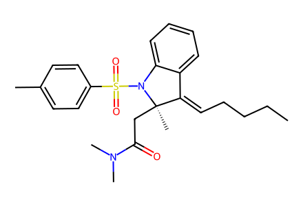
CCCC/C=C1\c2ccccc2N(S(=O)(=O)c2ccc(C)cc2)[C@]1(C)CC(=O)N(C)C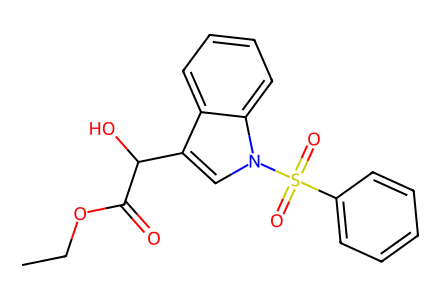
CCOC(=O)C(O)c1cn(S(=O)(=O)c2ccccc2)c2ccccc12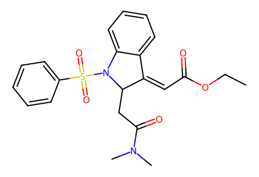
CCOC(=O)/C=C1\c2ccccc2N(S(=O)(=O)c2ccccc2)C1CC(=O)N(C)C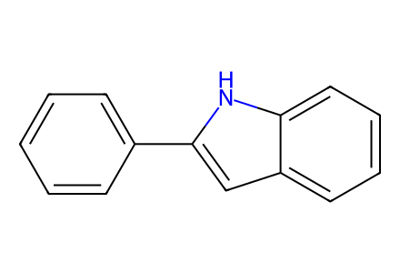
c1ccc(-c2cc3ccccc3[nH]2)cc1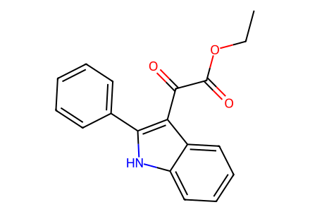
CCOC(=O)C(=O)c1c(-c2ccccc2)[nH]c2ccccc12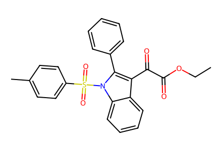
CCOC(=O)C(=O)c1c(-c2ccccc2)n(S(=O)(=O)c2ccc(C)cc2)c2ccccc12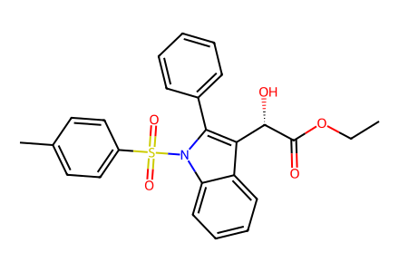
CCOC(=O)[C@@H](O)c1c(-c2ccccc2)n(S(=O)(=O)c2ccc(C)cc2)c2ccccc12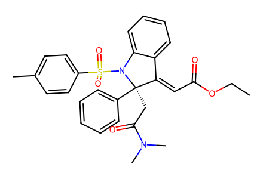
CCOC(=O)/C=C1\c2ccccc2N(S(=O)(=O)c2ccc(C)cc2)[C@]1(CC(=O)N(C)C)c1ccccc1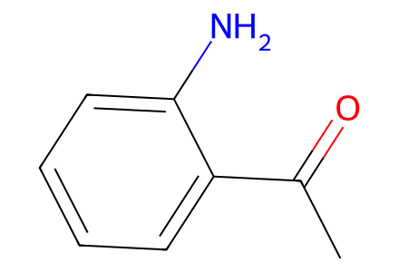
CC(=O)c1ccccc1N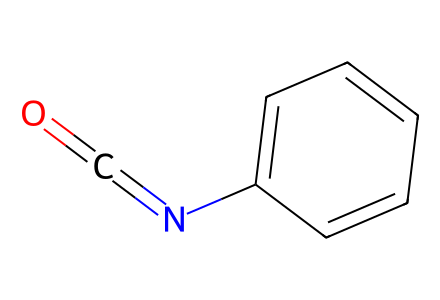
O=C=Nc1ccccc1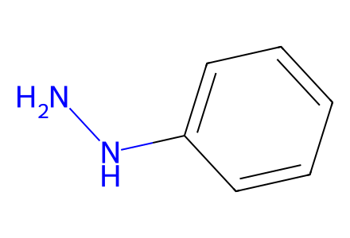
NNc1ccccc1
CCOC(=O)C=O
CCOC(=O)C(=O)Cl
O=CO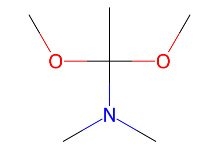
COC(C)(OC)N(C)C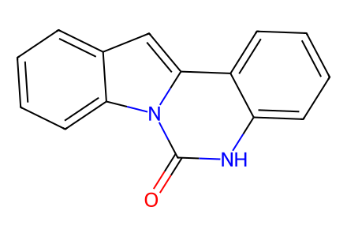
O=c1[nH]c2ccccc2c2cc3ccccc3n12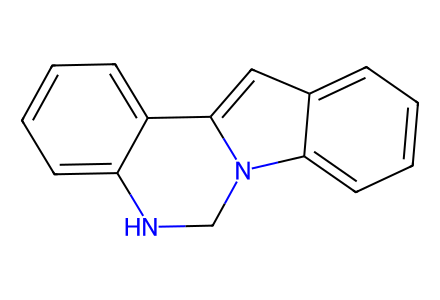
c1ccc2c(c1)NCn1c-2cc2ccccc21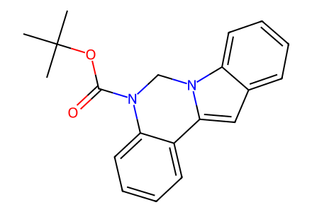
CC(C)(C)OC(=O)N1Cn2c(cc3ccccc32)-c2ccccc21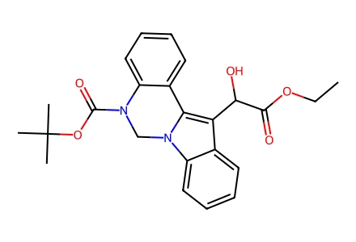
CCOC(=O)C(O)c1c2n(c3ccccc13)CN(C(=O)OC(C)(C)C)c1ccccc1-2CCOC(=O)/C=C1\c2ccccc2N2CN(C(=O)OC(C)(C)C)c3ccccc3C12CC(=O)N(C)C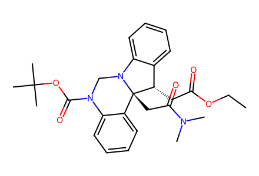
CCOC(=O)C[C@H]1c2ccccc2N2CN(C(=O)OC(C)(C)C)c3ccccc3[C@@]12CC(=O)N(C)C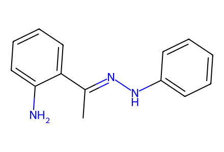
C/C(=N\Nc1ccccc1)c1ccccc1N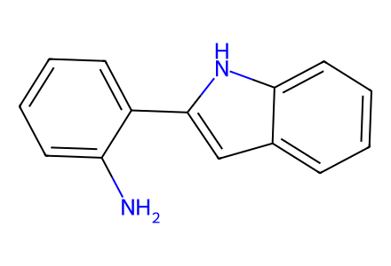
Nc1ccccc1-c1cc2ccccc2[nH]1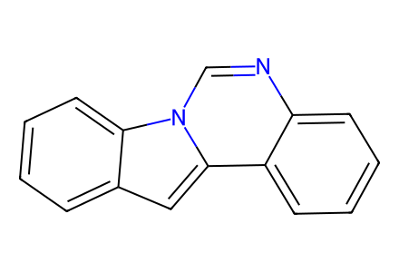
c1ccc2c(c1)cc1c3ccccc3ncn21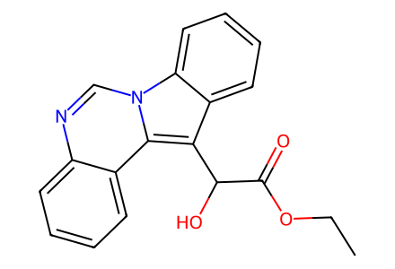
CCOC(=O)C(O)c1c2ccccc2n2cnc3ccccc3c12CCOC(=O)[C@@H](O)c1c2ccccc2n2cnc3ccccc3c12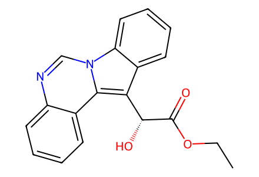
CCOC(=O)[C@H](O)c1c2ccccc2n2cnc3ccccc3c12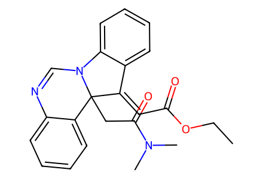
CCOC(=O)/C=C1\c2ccccc2N2C=Nc3ccccc3C12CC(=O)N(C)C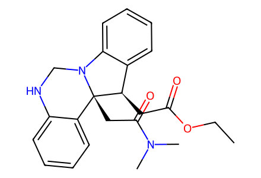
CCOC(=O)C[C@@H]1c2ccccc2N2CNc3ccccc3[C@@]12CC(=O)N(C)C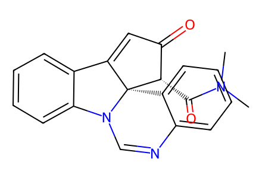
CN(C)C(=O)[C@H]1C(=O)C=C2c3ccccc3N3C=Nc4ccccc4[C@]213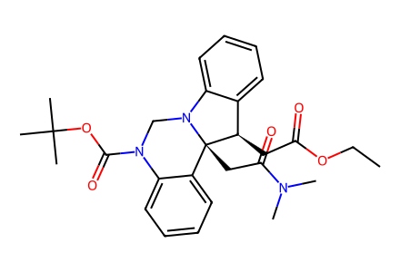
CCOC(=O)C[C@@H]1c2ccccc2N2CN(C(=O)OC(C)(C)C)c3ccccc3[C@@]12CC(=O)N(C)C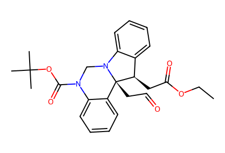
CCOC(=O)C[C@@H]1c2ccccc2N2CN(C(=O)OC(C)(C)C)c3ccccc3[C@@]12CC=O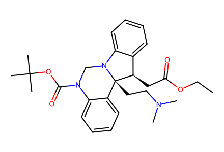
CCOC(=O)C[C@@H]1c2ccccc2N2CN(C(=O)OC(C)(C)C)c3ccccc3[C@@]12CCN(C)C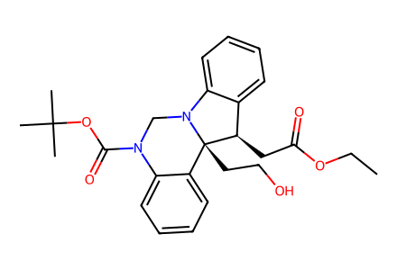
CCOC(=O)C[C@@H]1c2ccccc2N2CN(C(=O)OC(C)(C)C)c3ccccc3[C@@]12CCO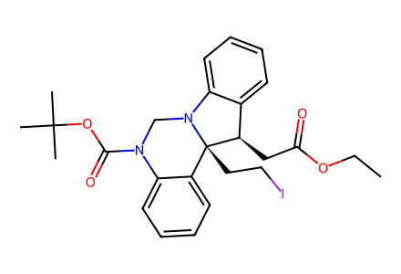
CCOC(=O)C[C@@H]1c2ccccc2N2CN(C(=O)OC(C)(C)C)c3ccccc3[C@@]12CCI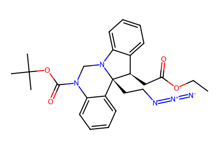
CCOC(=O)C[C@@H]1c2ccccc2N2CN(C(=O)OC(C)(C)C)c3ccccc3[C@@]12CCN=[N+]=[N-]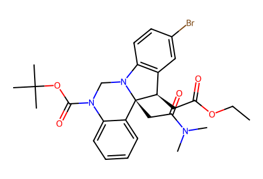
CCOC(=O)C[C@@H]1c2cc(Br)ccc2N2CN(C(=O)OC(C)(C)C)c3ccccc3[C@@]12CC(=O)N(C)C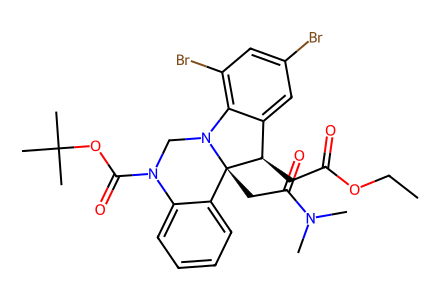
CCOC(=O)C[C@@H]1c2cc(Br)cc(Br)c2N2CN(C(=O)OC(C)(C)C)c3ccccc3[C@@]12CC(=O)N(C)C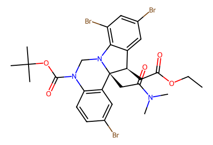
CCOC(=O)C[C@@H]1c2cc(Br)cc(Br)c2N2CN(C(=O)OC(C)(C)C)c3ccc(Br)cc3[C@@]12CC(=O)N(C)C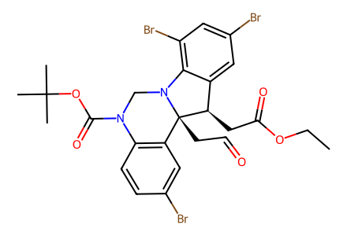
CCOC(=O)C[C@@H]1c2cc(Br)cc(Br)c2N2CN(C(=O)OC(C)(C)C)c3ccc(Br)cc3[C@@]12CC=O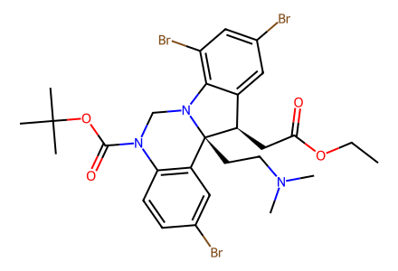
CCOC(=O)C[C@@H]1c2cc(Br)cc(Br)c2N2CN(C(=O)OC(C)(C)C)c3ccc(Br)cc3[C@@]12CCN(C)C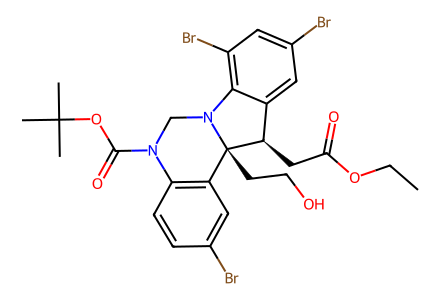
CCOC(=O)C[C@@H]1c2cc(Br)cc(Br)c2N2CN(C(=O)OC(C)(C)C)c3ccc(Br)cc3[C@@]12CCO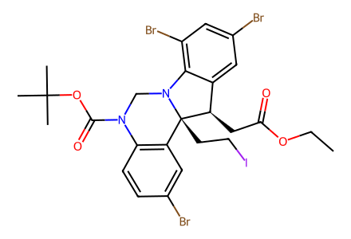
CCOC(=O)C[C@@H]1c2cc(Br)cc(Br)c2N2CN(C(=O)OC(C)(C)C)c3ccc(Br)cc3[C@@]12CCI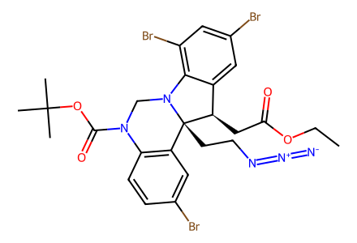
CCOC(=O)C[C@@H]1c2cc(Br)cc(Br)c2N2CN(C(=O)OC(C)(C)C)c3ccc(Br)cc3[C@@]12CCN=[N+]=[N-]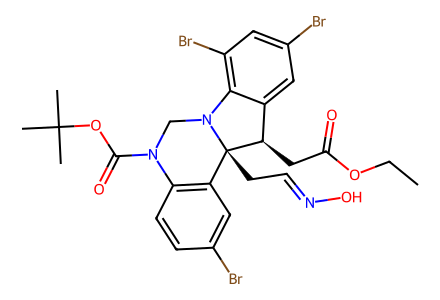
CCOC(=O)C[C@@H]1c2cc(Br)cc(Br)c2N2CN(C(=O)OC(C)(C)C)c3ccc(Br)cc3[C@@]12CC=NO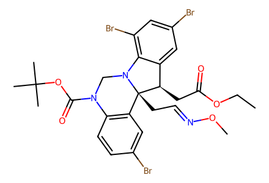
CCOC(=O)C[C@@H]1c2cc(Br)cc(Br)c2N2CN(C(=O)OC(C)(C)C)c3ccc(Br)cc3[C@@]12CC=NOC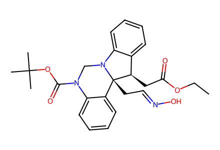
CCOC(=O)C[C@@H]1c2ccccc2N2CN(C(=O)OC(C)(C)C)c3ccccc3[C@@]12CC=NO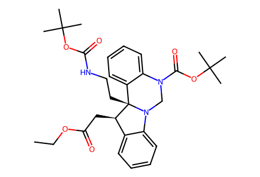
CCOC(=O)C[C@@H]1c2ccccc2N2CN(C(=O)OC(C)(C)C)c3ccccc3[C@@]12CCNC(=O)OC(C)(C)C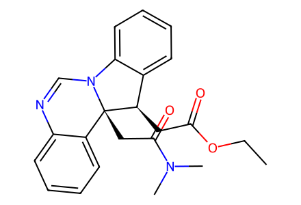
CCOC(=O)C[C@@H]1c2ccccc2N2C=Nc3ccccc3[C@@]12CC(=O)N(C)C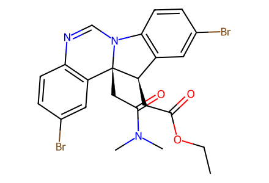
CCOC(=O)C[C@@H]1c2cc(Br)ccc2N2C=Nc3ccc(Br)cc3[C@@]12CC(=O)N(C)C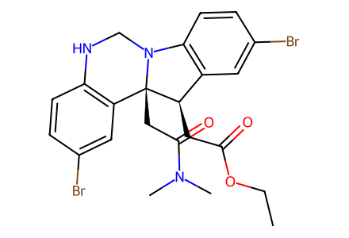
CCOC(=O)C[C@@H]1c2cc(Br)ccc2N2CNc3ccc(Br)cc3[C@@]12CC(=O)N(C)C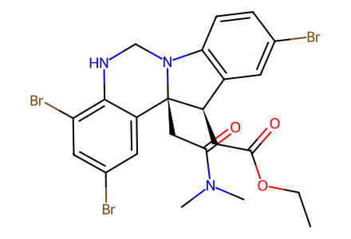
CCOC(=O)C[C@@H]1c2cc(Br)ccc2N2CNc3c(Br)cc(Br)cc3[C@@]12CC(=O)N(C)C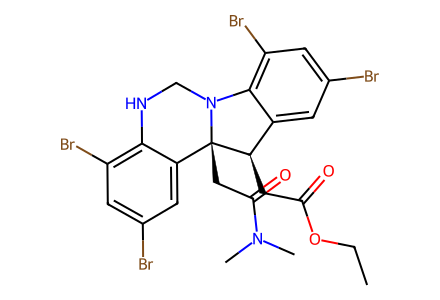
CCOC(=O)C[C@@H]1c2cc(Br)cc(Br)c2N2CNc3c(Br)cc(Br)cc3[C@@]12CC(=O)N(C)CCCOC(=O)C[C@@H]1c2cc(Br)ccc2N2C=Nc3c(Br)cc(Br)cc3[C@@]12CC(=O)N(C)CCCOC(=O)C[C@@H]1c2cc(Br)cc(Br)c2N2C=Nc3c(Br)cc(Br)cc3[C@@]12CC(=O)N(C)C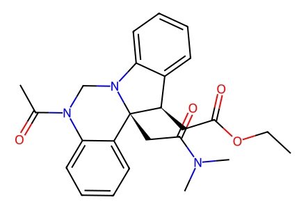
CCOC(=O)C[C@@H]1c2ccccc2N2CN(C(C)=O)c3ccccc3[C@@]12CC(=O)N(C)CCCOC(=O)C[C@@H]1c2cc(Br)cc(Br)c2N2CN(C(C)=O)c3ccccc3[C@@]12CC(=O)N(C)CCCOC(=O)C[C@@H]1c2cc(Br)ccc2N2CN(C(C)=O)c3ccc(Br)cc3[C@@]12CC(=O)N(C)CCCOC(=O)C[C@@H]1c2cc(Br)cc(Br)c2N2CN(C(C)=O)c3ccc(Br)cc3[C@@]12CC(=O)N(C)CCCOC(=O)Cc1c2n(c3ccccc13)CNc1ccccc1-2CCOC(=O)CC(c1cc(Br)cc(Br)c1N)c1ccnc2ccc(Br)cc12CC(C)(C)OC(=O)N1CN2c3ccccc3[C@H]3CC(=O)NCC[C@]32c2ccccc21
CC(C)(C)OC(=O)N1CN2c3c(Br)cc(Br)cc3[C@H]3CC(=O)NCC[C@]32c2cc(Br)ccc21O=C1C[C@@H]2c3cc(Br)cc(Br)c3N3CNc4ccc(Br)cc4[C@@]23CCN1O=C1C[C@@H]2c3cc(Br)cc(Br)c3N3C=Nc4ccc(Br)cc4[C@@]23CCN1CCOC(=O)C(=O)c1c2ccccc2n2cnc3ccccc3c12-39.svg)
CCOC(=O)C[C@@H]1c2ccccc2N2CNc3ccccc3[C@@]12CC(=O)N(C)C-51.svg)
CC(C)(C)OC(=O)N1CN2c3ccccc3[C@H]3CC(=O)NCC[C@]32c2ccccc21CC(C)(C)OC(=O)N1CN2c3c(Br)cc(Br)cc3[C@H]3CC(=O)NCC[C@]32c2cc(Br)ccc21-1.svg)
O=C1C[C@@H]2c3cc(Br)cc(Br)c3N3C=Nc4ccc(Br)cc4[C@@]23CCN1